テキスト
プログラムを作って遊べるようになるのを目標に書いてみました。
丁寧に書いているので、わからないというより、まわりくどくかんじるかもしれません_(:3 」∠ )_
導入
何事も一番最初の一歩を踏み出せるかが大切です。
やりたいなと思っていても最初の一歩が踏み出せない。よくあることだと思います。
その一歩を踏み出したあなたが、そのまま次の一歩を踏み出せるようお手伝いをいたします。
どの一歩にもそれなりの障害がありますが、急ぐことはありません。
一歩ずつ進んでいきましょう。
最初の一歩
まず最初にするべきは全体を眺めることだと思います。
山に登るとして、まずすることは山を眺めることだと思います。
自分の目標を見据え、どう歩めばよいのか、その全体をつかみましょう。
プログラムの山頂にはあなたの作りたいものがあります。 どうやったらそこにたどり着けるのかその道を眺めてみましょう。
山を登る最初の一歩は山を登るための準備です。
準備ができてないと途中で引き返すことになります。
同様にプログラムの最初の一歩も準備です。
準備ができていないと障害に多くぶつかることになり、
途中でモチベーションが切れ、その歩みを止めてしまいます。
一度歩くのをやめてしまうと期間が開くことになり、
次歩きだそうとしたら前回やっていたことを忘れてしまっています。
もちろん障害がなくても三歩進んで二歩下がるものではありますが、
障害があれば三歩進む前に止まってしまうかもしれません。
よい準備をして、できるだけ障害を排除して進みやすくしましょう。
7zip
まず最初に7zipをインストールしてもらいたいです。
7zipは現在使われている物で最高の性能を持っている圧縮展開ファイル形式です。 またインストールすることでついてくるファイルビューワも優秀なのでおすすめです。 既にPCに別の圧縮展開ソフトが入っていても入れておきましょう。
普段使っているものがあるからインストールいらないでしょうと思われるかもしれませんが、
7zipを強く推奨する理由があります。
世間でよく使われているソフトには問題があるものがあり、特にLhaplusのようなソフトは、
圧縮ファイルの中の勝手に大切なファイルを勝手に削除することがあるためおすすめできません。
Windows10の標準のものも同様の問題があります。
問題がないほかの圧縮展開ソフトとしてWinRARを挙げておきます。
シェアウェアという販売形態で、有料ソフトですが一応無料で使い続けることができます。
私は買いました_(:3 」∠ )_
正しく動作するソフトを使いましょう。
インストール
2.softフォルダの中に7z1900-x64.exeがあるのでこれを開いてInstallをクリックします。
これで7zipのインストールは終わりです。迷うことはないと思います。あとは閉じてよいです。
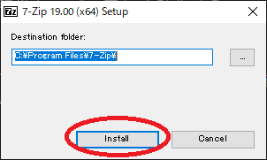
拡張子について
次に2.softフォルダを見てください。
このようなファイル構成になっているはずです。
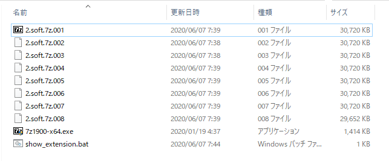
- soft/ ├── 2.soft.7z.001 ├── 2.soft.7z.002 ├── 2.soft.7z.003 ├── 2.soft.7z.004 ├── 2.soft.7z.005 ├── 2.soft.7z.006 ├── 2.soft.7z.007 ├── 2.soft.7z.008 ├── 7z1900-x64.exe └── show_extension.bat
2.soft.7z.001から始まる連番のファイルがあります。
2.soft.7zのように001がついていない場合があります。
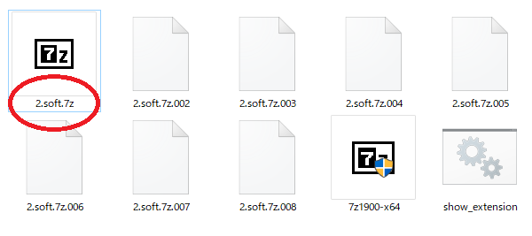
windowsにおいて名前にドット.が含まれるとき、最後のドット以降を拡張子と呼びます。
JPGやMP3を効いたことがあるかもしれません。だいたいそういうのです。
aaa.bbb.ccc.dddという名前のファイルがあったとしたら.dddを拡張子といいます。
普通ドットも含むことが多いです。
つまり001のようになっている場合、拡張子が表示されていない設定になっているのです。
この時はwindowsの設定で拡張子というのが非表示になっているので、
これを表示する状態にする必要があります。
とりあえずこのサイト https://paso-kake.com/it/windows10/3103/を見て設定してみてください。
設定できない場合show_extension.batというものを置いているのでこれをクリックして実行してください。
上のサイトのやり方とは違って、実行後に再起動が必要です。
面倒ではありますが、これで確実に拡張子が表示されるはずです。
7zipの使い方
拡張子が表示される状態にすると、001~008までファイルがあるのがわかると思います。
001のファイルを右クリックして、出たメニューの中から7Zipにカーソルを合わせます。
カーソルを合わせるとさらにメニューが出るので、
とりあえずその中の「ここに展開」を選びます。別にどこに展開しても構わないです。
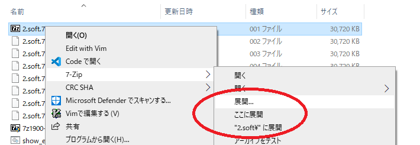
これで
の４つのファイルが展開されます。
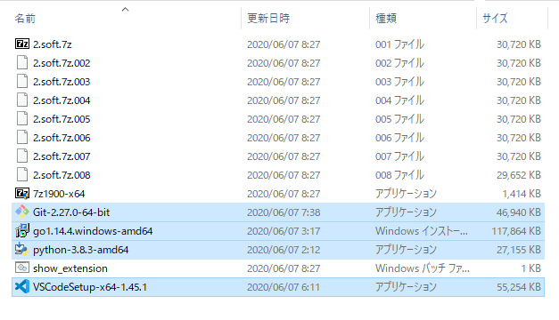
常に最新版がリリースされています。
上の箇条書きには公式サイトへのリンクを張っていますので、
最新版を取得して使って構いません。
ただしバージョンアップによる変更で説明と実物が乖離します。
新しいものを使って説明と乖離していた場合適当に選んでも問題ありません。
パソコンというのはたいてい適当に操作しても、あとから取り返しがつくことが多いです。
問題が起きたらその都度調べて解決しましょう。
テキストエディタのインストール
テキストエディタというのはただ文字を入力できてそれを保存するものです。いわゆるメモ帳です。
ここで「あっワードか」となったかもしれませんが、トラックを乗用車に含めないようなもので、
MicrosoftのWordはワードプロセッサーと呼ばれ、普通テキストエディタには含めません。
ワードはプログラムを書くのには不要なものが多すぎる上に、保存したものが独自形式で他で使えません。
プログラムを書く上で文字の色を変えたり、大きさを変えたり、 余白を調整したりする機能のある文書作成ソフトは使いません。 シンプルにただ文字列を文字列として保存できる物を使います。
テキストエディタにも種類がいっぱいあります。
windows標準のメモ帳でも一応可能ですが、それは通勤に三輪車を使うようなものです。
エンジンはついてなくていいので、自転車を使いましょう。
例としていくつか挙げておきます。
| 名前 | 値段 | コメント |
|---|---|---|
| Terapad | 無料 | 私もよく使う |
| 秀まるエディタ | 有料 | 私は使ったことがない |
| サクラエディタ | 無料 | 私は使ったことがない |
| Mery | 無料 | 私は使ったことがない |
| Sublime text | 無料 | そこそこ最近人気だった |
| Visual Studio Code | 無料 | 絶賛流行中 |
| Vim | 無料 | 私がメインで使っている 慣れてからおすすめ |
などを挙げておきます。
ここではTerapadと最近流行りのVisual Studio Codeというテキストエディタをインストールします。
2つインストールする理由はあなたに使いやすいほうを選んでもらいたいからです。
最初にインストールしてもらうTerapadはシンプルです。
必要な機能をちゃんと持っており正しく動作する信頼性があります。
次にインストールしてもらうVisual Studio Codeは機能盛り沢山です。
設定項目も複雑で様々なことができます。
Terapadは個人の環境に左右されにくいので、このテキストではTerapadの画面を載せることが多いでしょう。
もちろんテキストエディタが何なのか理解していて、お気に入り物がある場合それを使って構いません。
私はVimをつかってこのテキストを書いています。Vimはいいぞ(/'ω')/
Terapad のインストール
インストールに難しいところはありません。
2.soft/tpad109.exe を開きます。
あとは肯定的な選択肢をクリックして行けばインストールが終わります。
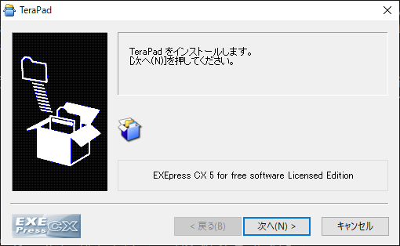
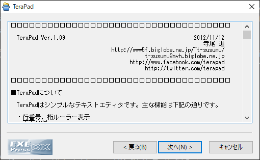
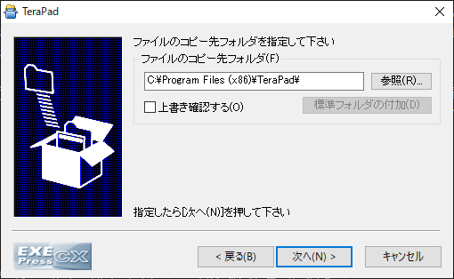
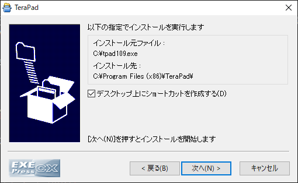
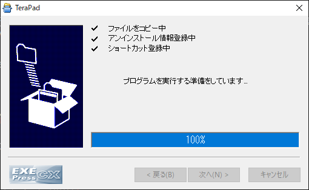
インストールが終わりますとTerapadが起動します。
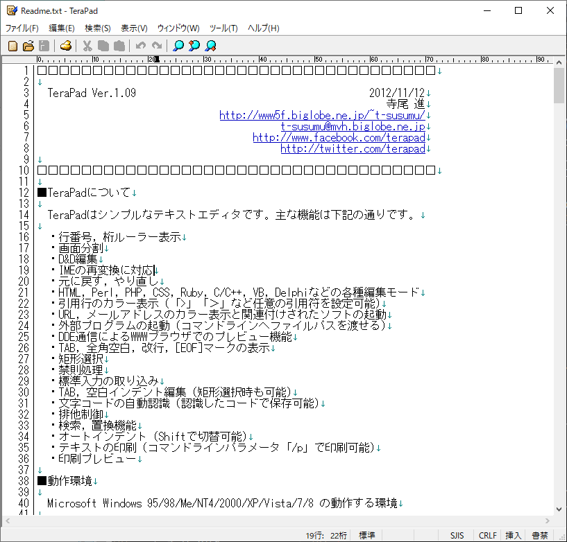
ここで、Terapadの設定を変更します。 上の表示からオプションを選んでください。
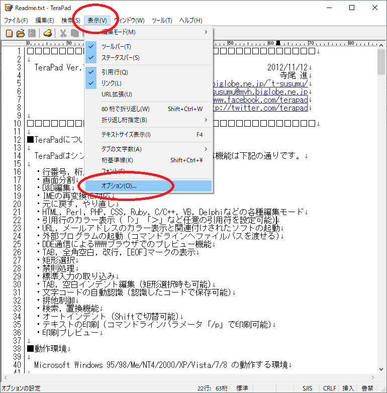
開いたウィンドウのタブの文字数、元に戻す回数を画像のようにしてください。
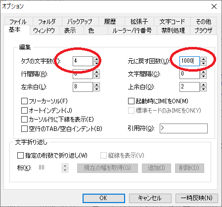
次に上の沢山あるタブの中からウィンドウを選んでください。
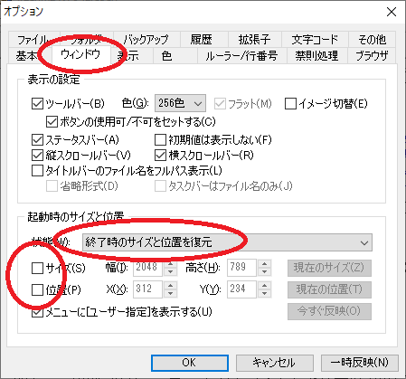
下の機能の灰色のところを「終了時のサイズと位置を復元」に変更、
下のサイズと位置のチェックを外してください。
終わったら上のタブの表示をクリックしてください。
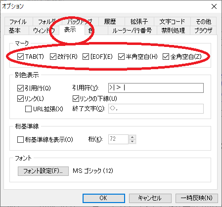
上の1列すべてにチェックを入れてください。
終わったら上のタブの文字コードをクリックしてください。
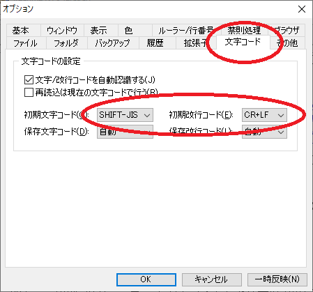
このようになっていると思います。
初期文字コードのところだけを弄ります。
まず右のCR+LFをLFに変更してください。
次に左のSHIFT-JISをUTF-8Nに変更してください。
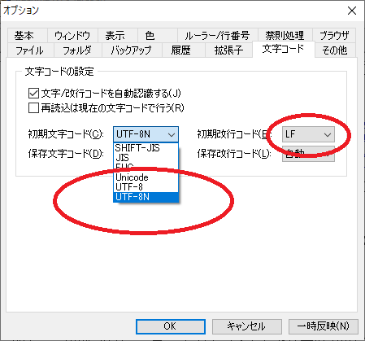
間違いやすいのですがUTF-8ではなくUTF-8Nです。
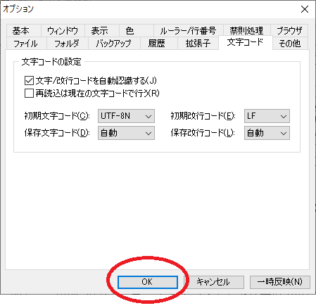
この状態になればOKです。
Visual Studio Code のインストール
インストールに難しいところはありません。
まず 2.soft/VSCodeSetup-x64-1.45.1.exe を開きます。
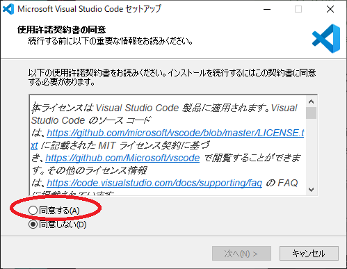
ひらくとこのような画面になりますので、よくあるソフトと同じようにインストールできます。

この画面になったらチェックをすべて入れます。
あとはそのまま進めるとインストールできます。
インストールが完了するとVisual Studio Codeが起動します。
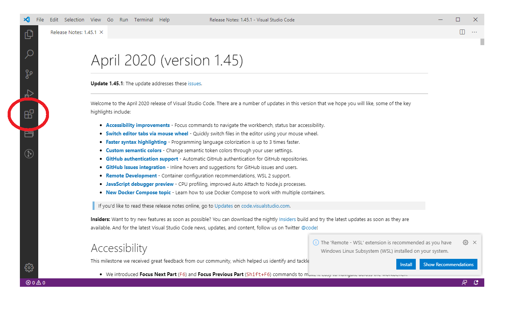
左の赤まるをつけたアイコンをクリックします。

するとこのように左側にメニューが開きます。
これはVisual Studio Codeに拡張機能を検索、インストールできるメニューです。
上に検索窓がありますので検索してインストールできます。覚えておきましょう。
http://net2.system.to/pc/font.html http://net2.system.to/pc/cgi-bin/download.cgi?file=yutapon_coding_081.zip
フォントのインストール
これを読んでいるあなたがどれくらいフォントの重要性を認識しているかわかりませんが、
フォントはプログラマーにはとても重要なものです。
なぜならプログラムに1文字でも間違いがあってはならないからです。
例えば大文字のIと小文字のl、数字の1、記号の|など見た目が似ている文字があります。 他にも数字の0や大文字のOなど区別できないと困ります。 |でないと駄目なのにlが書いてあったなど、 プログラムが動かなくて間違っている部分を目を皿にして探さないといけなくなるかもしれないのです。
これは極端な例ですがマイナスに似た記号はこんなにあります。
| 文字 | UTF-8 | Unicode | 説明 |
|---|---|---|---|
| - | 2D | U+002D | ASCIIのハイフン |
| ー | E383BC | U+30FC | 全角の長音 |
| ‐ | E28090 | U+2010 | 別のハイフン |
| ‑ | E28091 | U+2011 | 改行しないハイフン |
| – | E28093 | U+2013 | ENダッシュ |
| — | E28094 | U+2014 | EMダッシュ |
| ― | E28095 | U+2015 | 全角のダッシュ |
| − | E28892 | U+2212 | 全角のマイナス |
| ｰ | EFBDB0 | U+FF70 | 半角カナの長音 |
他にシングルクォート' やバッククォート` にも種類があります。
「‘’」, 「“”」, 「‚‘」, 「„“」, 「‚’」, 「„”」, 「‹ ›」, 「« »」, 「› ‹」, 「» «」,
https://ja.wikipedia.org/wiki/引用符
これらはウェブサイト等からソースコードをコピーした際に勝手に変換されていることがあります。
こういった文字がデザイン重視ですべて同じに見えてはダメなのです。
プログラマーがコーディング(coding)に使う道具で、
テキストエディターやフォントはこだわる必要があります。
一例として、動かないプログラムを用意しました。
#include <stdio.h>
int main(void){
printf("Hello world!\n");
return 0;
}
何が悪いと思いますか？
慣れるとすぐあれじゃないかなと思い当たるようになりますが、
入門者には難しいでしょう。
これをwindows標準のメモ帳で開くとこうなります。
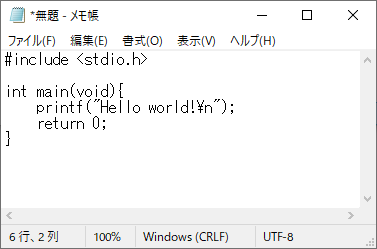
特に変なところはありませんね。
これを先ほどインストールしたTerapadをあえて初期設定で使うとこうなります。
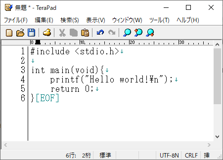
こちらも変なところはありませんね。
それでは既に書いた設定を終えたTerapadで開くとこうなります。
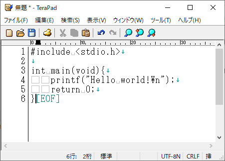
どうでしょうか、ちょっと変わりましたね。 ちなみに私の使っているテキストエディタでこのテキストの部分はこのように表示されています。
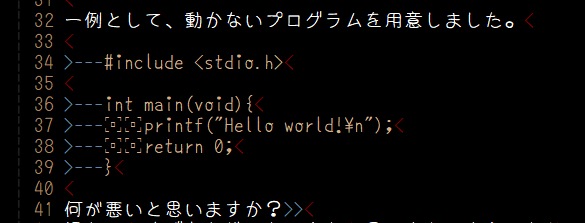
こちらだと一目瞭然ですね。
メモ帳や初期設定のTerapadではただの空白に見えるところが、
設定済みのTerapadでは□が表示されています。
これは何でしょうか。これは全角の空白です。
プログラムにおいて全角空白は基本的に入っていてはダメです。
プログラムが動かなくなります。
これを知らずにプログラムを書いて動かない、
原因がわからない、無駄に時間が過ぎる、自由な時間が浪費されてしまう、
やる気がなくなる、と悪いことずくめなのです。
設定前のTerapadと設定後のTerapadでは、 実際は存在する文字なのだけども、何もないように表示される文字(不可視文字)の量がかわります。
設定済みのTerapadと私のテキストエディタの表示の違いは、フォントの違いです。 このフォントはプログラミング用のフォントのゆたぽんというフォントです。 全角空白が強調されて表示される、区別がつきにくい文字をはっきり区別できる、などの特徴があるフォントです。
http://anti.rosx.net/etc/memo/002_space.html には空白に見える様々な文字が載せてあります。 プログラマーが使ってよい空白は水平タブと半角空白の2つだけです。
プログラマーがプログラミングで使うフォントは選ばれたフォントでなければなりません。
もう一つダメな例を載せます。
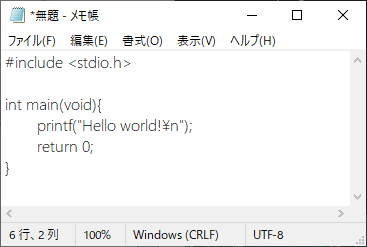
これは見た目きれいですが何がダメでしょうか。
これはプロポーショナルフォントと呼ばれるフォントの1例です。
1文字の幅が文字によって変わるフォントのことです。
例えばiとmで数倍の差があります。
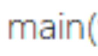
プログラムは構造を持っています。
プロポーショナルフォントはデザイン性のためにその構造をわかりずらくします。
プログラマーが使うべきフォントは等幅フォントと呼ばれるフォントです。
プログラムの制御構造を際立たせ、誤りを見つけやすくします。
テキストエディタやフォントで防げる誤りがあるのです。
フォントの条件
まとめると、
- 似た文字が区別できるフォントであること
- 空白(半角空白、全角空白、タブ)が区別できるよう可視化されるフォントであること
- 等幅フォントであること
こういった条件を満たすことが必要です。
こういった条件を普通のフォントは満たしていないので、特殊なフォントを使う必要があります。
プログラミングする際はこういった条件を満たしているフォントを使いましょう。
https://ics.media/entry/7010/にありますが、 とりあえずSource Han Code JPを挙げておきます。 ただこのフォントは全角の文字幅が半角の1.5倍という変わったフォントではあります。
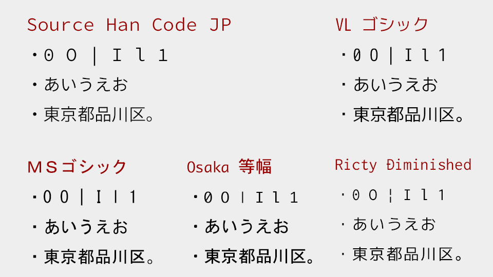
ほかのフォントとして白源を挙げておきます。 https://github.com/yuru7/HackGen
私はFira Codeも好きです。 https://qiita.com/Nossa/items/457d17339e4d31cd0b0d
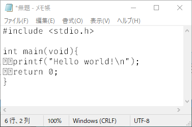
私は先ほども言いましたがもう5年程ゆたぽんを使っています。 http://net2.system.to/pc/font.html
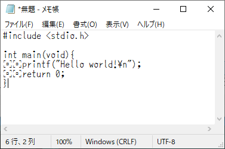
作者のREADME.TXTより
半角英数字の可読性を重視する。 （書体の統一感が損なわれても可読性を優先する） （[コンマ・ドット][セミコロン・コロン] [アイ・エル・いち][ゼロ・オー]）
全角半角の区別も出来る様にする。 （全角スペースは記号にする）
平仮名、片仮名の濁音、半濁音の区別をはっきりさせる。 （テン・まるを大きくする）
漢字は、最低限入れる。 （初期公開は、漢字無しでも可とする）（IBM拡張まで作成済み）
その他
半角と全角の括弧の区別が出来ます。 漢数字「〇」と、丸印「○」の区別も付きます。
どのフォントでも構いませんので、専用のフォントを使うようにしましょう。
Git
次にGitというソフトをインストールします。
Gitは世界中で使われているバージョン管理ソフトというものです。
雑に言うとファイルの履歴を残しておくことができる物です。
現在ではほぼデファクトスタンダードとなっています。
このテキストもGitで管理されています。
7Zipで展開したファイルの中にある2.soft/Git-2.27.0-64-bit.exeを開いてください。
開けたら以下の画像の通りに進めてください。
２か所だけ注意がありますが難しくないと思います。
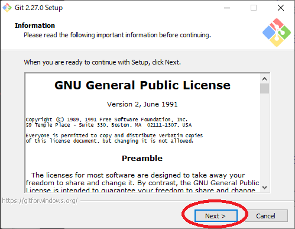
次へ
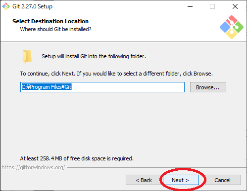
次へ

上の画像の赤まるで囲った部分を画像に合わせてください。

次へ

次へ

次へ
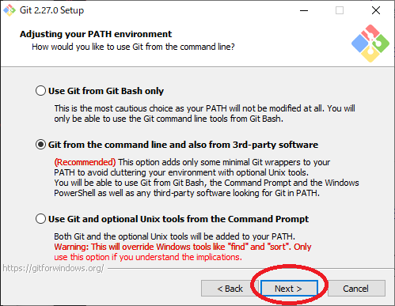
次へ
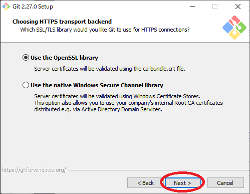
次へ
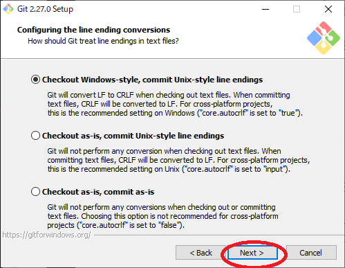
次へ
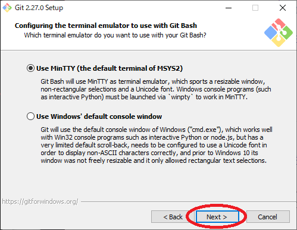
次へ

次へ
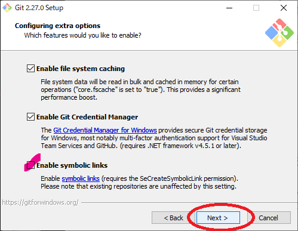
ここのEnable symbolic linksにチェックつけてください。
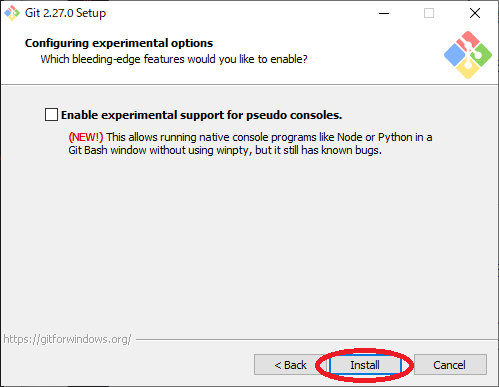
以上でGitのインストールが終わりました。
Go言語のインストール
Googleが作ったGo言語(普通Golangという)を使えるようにします。
Go言語は比較的新しく2009年に作られました。 コンパイルが必要なコンパイル言語といわれる種類の言語です いろんな言語のいいとこどりをした言語で、 覚えることが少ない特徴があり導入コストが低い言語です。 プログラミング入門にとても適している言語です。 詳しい説明は以降の章でします。
インストール
まず、2.soft/go1.14.4.windows-amd64.msiを開きます。
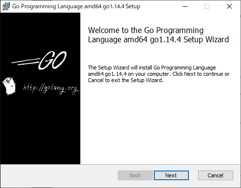
特に難しいことはなく、適当に肯定的な選択肢を選んでいきます。 10秒くらいでインストールが完了します。
Pythonのインストール
次にPythonという言語を使えるようにします。
Pythonは少し古めではありますが、
それ以前に流行っていたperlという言語などから派生したインタープリタ言語です。
インデントというものに意味を持たせている特徴があります。
ちなみに私はバージョン管理が面倒であまり好きではない言語です。 1つのバージョンしか使わないならよいのですが、 外部ライブラリを使おうとするとそうもいかなくなりとても面倒になります。
ただ手っ取り早く触れる言語の1つなのでプログラム入門者にはおすすめできます。
インストール
2.soft/python-3.8.3-amd64.exe を開きます。

こういうのが出ますので、
赤い丸で囲ったAdd Python 3.8 to PATHにチェックを入れ、
青い丸で囲ったCustomize installationをクリックします

上のようになったら、この画像の通りになっているのを確認して、そのままNextを押します。
下の画像の赤のところにようにチェックを入れます。

こうなります。
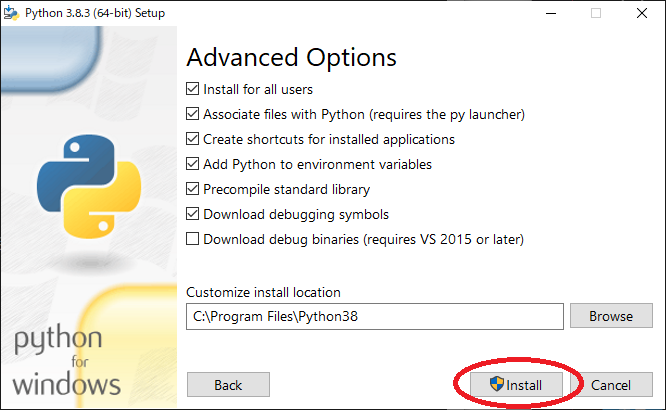
同じ状態になったら左下のInstallをクリックします。

こんなふうになります。 私は1分くらいで終わりました。
インストール終わった感出ますがそのままDisable path length limit をクリックします。

クリックすると消えますので左下のCloseを押します。

これでPythonのインストール完了です。
ハローワールド
それではいよいよプログラムに入っていきます。
日本で小学校に入ったら入学式があるように、
プログラムの入門の第一歩はハローワールドと決まっています。
入学式経験したことがないというのはちょっと寂しいですよね。
私もあなたに寂しい思いをしてほしくありません。
いわば伝統です。
わたしもハローワールドしたことあるよという人になってほしいのです。
世界中のプログラマーは皆ハローワールドをやってプログラマーになっていきます。
次はあなたの番です。
そもそもハローワールドとは
FF14の民にはハロワでおなじみハローワールド。
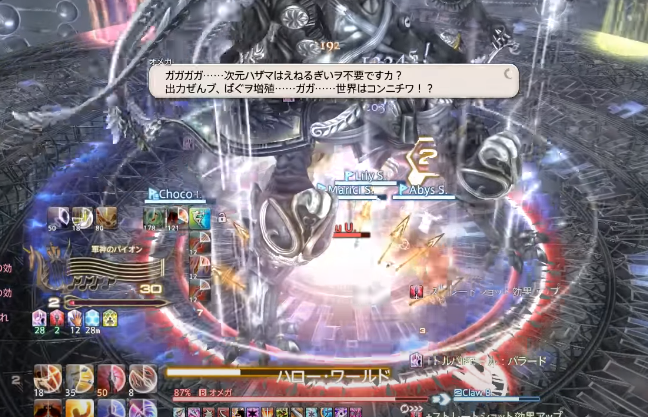
これのことです。
正確にはこれの元ネタです。
ハローワールドはプログラム入門者にプログラムの例を出す際最初に書かれる、
実行するとただHello world!と表示されるプログラムのことです。
実際にはこのようになります。
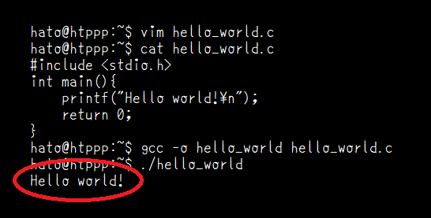
この中身の説明はこの2章ではなく3章で説明します。
今は一番下の部分にHello world!と書いてあることだけ見ておいてください。
ただ文字列をパソコンに表示させる、それだけのプログラムがハローワールドです。
たったこれだけですが、これを実際にやるにはいくつか課題があります。
例えば正しくプログラムを入力しなければなりません。
プログラムは入門者には呪文にしか見えないでしょう。
呪文を１文字も間違えずに正しく入力するのはそれなりに難しいことです。
変なところに余分な文字が入っていてはいけないのですが、
プログラムが呪文に見える入門者にとってそもそも全てが変なところなので、
どこが余分な文字が入っていてはいけない変なところなのかわかりません。
プログラミング入門者はこのハローワールドを通して、
プログラミングに必要な正しく文字を入力することを身につけます。
それでは実際にやっていきましょう。
C言語でハローワールド
C言語は昔にOS(オペレーティングシステム)を作るために作られたプログラミング言語です。
今でも特に組み込み系やハイパフォーマンスが要求される分野でよく使われています。
コンパイルが必要なコンパイル言語という種類の代表的なプログラミング言語です。
ハローワールド
このURLを開いてください。
https://wandbox.org/permlink/xGzIHxMqkg9ssjJ8
既にプログラムが書かれているページが開きます。
このサイトWandboxは、
webブラウザ上でプログラムを動かすことができるwebサイトです。
上の部分にプログラムを入力することができます。
プログラムはこのようになっています。
#include <stdio.h>
int main(){
printf("");
return 0;
}
赤まるのところのRun (or) Ctrl+Enter) をクリックすると、
上に書かれたプログラムが実行されます。

実行すると下の黒い部分に実行結果が表示されます。
今はそこに
start
0
Finish
と書かれています。
ここで、4行目のprintf("");のダブルクオート"で囲まれたところに
Hello world!\n と入力してみましょう。
プログラムはこのようになっています。
#include <stdio.h>
int main(){
printf("Hello world!\n");
return 0;
}

こんな感じです。
それではRun (or) Ctrl+Enter)を押して実行してみましょう。
正しく入力できていれば下の黒い部分がこのようになります。

start
Hello world!
0
Finish
さっきと変わり、Hello world! と表示されましたか？
もし正しくできなかった場合、
なにか間違って入力してしまっていたり、
間違って文字を消してしまっていたりが考えられます。
正しく実行できなくて、間違っている部分がわからなくても大丈夫です。
こちらのURLを開けば正しく入力されたプログラムが開けます。
https://wandbox.org/permlink/TPbCXa7oxdeM8zrb
正しくハローワールドできましたか？
これであなたは初めてのプログラムを書いて実行することができました!
おめでとうございます('ω')/
プログラムの中身の解説が欲しいかもしれませんが、
それはとりあえず後回しにします。
次へ進みましょう。
C++でハローワールド
C言語でハローワールドはできましたか？
次はC++言語でハローワールドします。
C++言語はC言語を拡張して作られたプログラミング言語で、
大規模なプログラムが作りやすくなっています。
C言語と同様に、コンパイルが必要なコンパイル言語という種類のプログラミング言語です。
C++言語はよく「しーぷらぷら」と呼ばれます。
ハローワールド
このURLを開いてください。
https://wandbox.org/permlink/cps6j0HbEnmBBViX
既にプログラムが書かれているページが開きます。
プログラムはこのようになっています。
今回は既にダブルクオートの中にHello world!!と書かれています。
#include <iostream>
int main() {
std::cout << "Hello world!!" << std::endl;
return 0;
}
C言語と少し変わっているのがわかりますか？ C言語のハローワールドはこんな感じでした。
#include <stdio.h>
int main(){
printf("Hello world!\n");
return 0;
}
C言語ではprintf("Hello world!\n");となっていた部分が、
C++ではではstd::cout << "Hello world!!" << std::endl;となっています。
それでは実行してみましょう。
といってもURLを開いた状態で、既に実行された状態になっています_(:3 」∠ )_
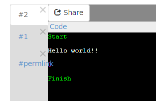
ちょっと違いをつけるために!の数を増やしていますが、
実行結果はC言語のハローワールドと一緒です。
少しいじってみましょう。
std::cout << "Hello world!!" << std::endl;
の上の行にprintf("Hello world!\n");
と書いてみましょう。
プログラムはこうなります。
#include <iostream>
int main() {
printf("Hello world!\n");
std::cout << "Hello world!!" << std::endl;
return 0;
}
実行してみましょう。

正しく実行できたでしょうか。
!が1つの行がC言語のprintf("Hello world!\n");で出力された文字列で、
!が2つの行がC++言語のstd::cout << "Hello world!! << std::endl;"で出力された文字列です。
正しく実行できなくても気にしないでください。
正しく実行できるURLを用意しています(/'ω')/
https://wandbox.org/permlink/xAmO61t4VeNgkffs
最初のほうにC++言語はC言語を拡張したものだと書きました。
C++言語はC言語の拡張なので、C言語のプログラムがある程度そのまま動きます。
それでは次にすすみましょう。
Go言語でハローワールド
次はGo言語というプログラミング言語でハローワールドします。
Go言語はGoogleがつくった新しい言語です。
C言語は1972年、C++は1985年、Go言語は2009年なのでだいぶ新しいです。
Go言語は検索するときにgoで検索すると動詞のgoが一致して検索しずらいのもあって、
普通Golangと呼ばれます。
ハローワールド
https://play.golang.org を開いてください。
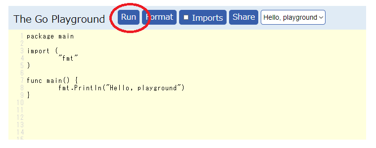
package main
import (
"fmt"
)
func main() {
fmt.Println("Hello, playground")
}
このページは私が何も準備しなくても、最初から文字列の違うハローワールドが書いてあります。
上のRunをクリックしてみましょう。下にHello, playground Program exited.と表示されます。
C言語やC++言語となんとなく似ているのがわかるでしょうか。
プログラミング言語はある程度共通点があることが多いです。
なので1つ言語を学ぶと新しくほかの言語を学ぶのが早くなります。
Pythonでハローワールド
ここまでコンパイル言語のハローワールドを見ていきました。
次にコンパイル言語でないインタープリタ言語のハローワールドを見ていきます。
コンパイル言語とは何か、インタープリタ言語言語とは何か、という説明は3章でします。
Pythonはプログラムが短く書きやすいインタープリタ言語の一つです。
また、数値計算に強く、科学計算の分野でよく使われています。
例えば最近話題のディープラーニングではPythonがとっても良く使われます。
ハローワールド
それではPythonでのハローワールドを見ていきます。 Pythonのハローワールドは１行です。
print("Hello world!")
https://code.sololearn.com/cOAXyhEmN1f7#py
今まで見てきたコンパイル言語と比べてかなり短いですね。
これはコンパイル言語ではないインタープリタ言語の特徴の一つです。
プログラムを書く時に短くかけるということは、早く作れるということにつながります。
じゃあ短いほうがいいよねとなりますが、
短いということはそれなりに情報が少ないということです。
それによる弊害がもちろんあります。
さっと作りたくて、その弊害が気にならないときインタープリタ言語はとても良い選択肢になります。
プログラミング言語は所詮道具にすぎません。作りたいものにあった道具を使いましょう。
その他の言語でハローワールド
ここまでCやC++、Golang、Pythonなどのハローワールドを見てきました。
ここではその他の言語の例として、JavaとRubyのハローワールドを見てみます。
Javaでハローワールド
Javaはクラスベースのオブジェクト指向の、実装の依存関係をできるだけ少なくするように設計された汎用プログラミング言語です。
といっても難しいですね。
雑に言うとJavaはある程度どこでも実行できるという特徴があります。
ちょっと前までのAndroidに使われていました。
数年前まではよく使われていますが、今では下火になっています。
それではハローワールドを見てみましょう。 プログラムはこのようになります。
public class Code {
public static void main(String[] args) {
System.out.println("Hello world!");
}
}
ちょっと長くて複雑ですね。
System.out.println("Hello world!");の部分が
C言語で言うprintf("Hello world!\n");の部分になります。
https://code.labstack.com/java
Rubyでハローワールド
次にRubyという言語でハローワールドを見ていきます。
Rubyは日本人のまつもと ゆきひろさんが作ったプログラミング言語です。
プログラマーが楽しくプログラミングできるように作られています。
日本のwebサイトなどでよく使われています。
私がうだうだ書くよりも作者の言葉をそのまま載せておきます。
以下まつもとゆきひろ、Ruby プログラミング入門 まえがき 監修者よりのページより。
Ruby には Perl や Python とは決定的に違う点があり、それこそが Ruby の存在価値なのです。
それは「楽しさ」です。
私の知る限り、Ruby ほど「楽しさ」について焦点を当てている言語は他にありません。
Ruby は純粋に楽しみのために設計され、言語を作る人、使う人、学ぶ人すべてが楽しめることを目的としています。
しかし、ただ単に楽しいだけではありません。
Ruby は実用性も十分です。実用性がなければ楽しめないではありませんか。
それではRubyのハローワールドを見ていきましょう。
puts "Hello world!"
https://paiza.io/projects/e/Z8VVWYIUaInWDhvCQj0jOQ
インタープリタ言語なのでPythonと似て短いですね。
ここまで、いろんな言語のハローワールドを見ていきました。
もし気になる言語があれば調べてみましょう。
3章では、今までざっと見てきたハローワールドの中身について見ていこうと思います。
ローカルで動かしてみよう
2章まででハローワールドをざっくり見てきました。
最近はWebブラウザ上で動かせるので便利になりましたね。
ここからはWebブラウザからいったん離れて、
手持ちのパソコン上でプログラムを動かしていこうと思います。
準備
さて準備ですが既に1章で終わっています。次へ進みましょう。
コンパイルをしてみよう
さていよいよコンパイルです。 ここまでコンパイルについて何も説明なく進めてきました。 このページの中でコンパイルについて説明します。
初めてのコンパイル
それではテキストエディタを開きます。
1章でインストールが終わっていれば、
デスクトップにVisual Studio Code というアイコンがあるはずです。
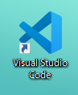
このマークがVisual Studio Codeのアイコンです。
これをクリックしてもいいのですが、 先に今からプログラムを書いていく場所を作りましょう。
1. 保存場所を作る
どこでもいいのですが、とりあえずデスクトップに1つフォルダを作りましょう。
フォルダ名は3.localにしましょう。
そして新しく作ったフォルダの中に更に2つフォルダを作りましょう。
フォルダの名前はgolangとpythonにします。
このようになります。
Desktop/3.local/
├── golang
└── python
2. テキストエディタを開く
新しく作った3.local/golangを開いてください。
そしてフォルダ内の何もないところを右クリックしてください。
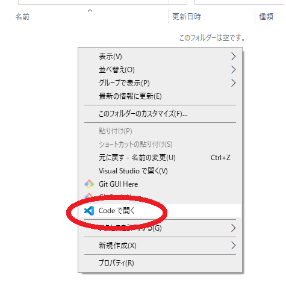
出たメニューにCodeで開くというのがありますね。
これをクリックしてください。
こうすると、Visual Studio Codeでファイルを保存すると勝手にこのフォルダに保存されます。
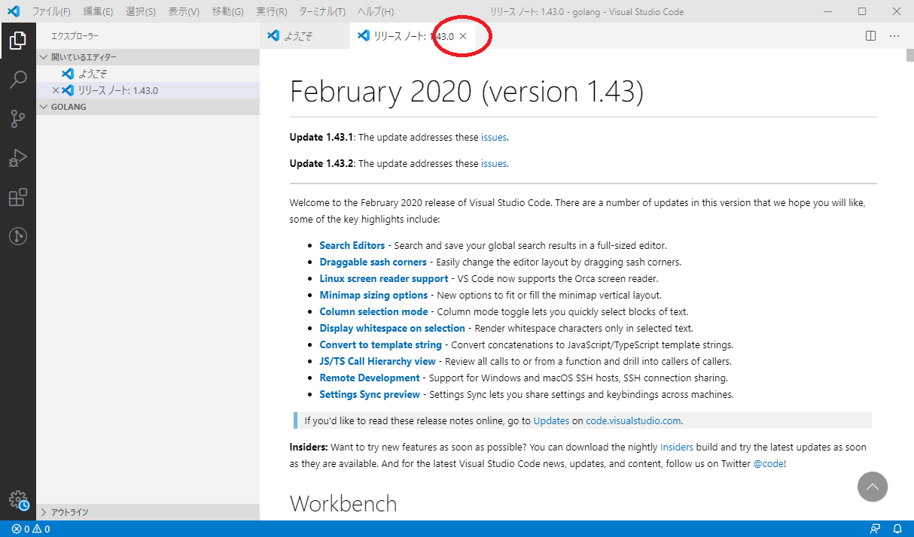
開くとリリースノートというのが出ますが、特に関係ないので上の×を押して閉じましょう。
ようこそというのもありますが、いらないので閉じましょう。
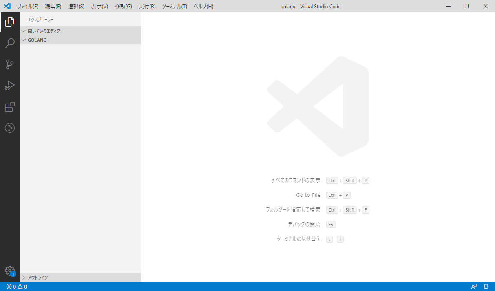
この画面になったら私と同じ状態です。
3. 新しいテキストファイルを作る
左側の灰色の部分の上のほうに開いているエディターとGOLANGと書かれています。
開いているエディターは現在Visual Studio Codeで開いているファイルの一覧が表示されます。
今は何も開いていないので何も書かれていません。
GOLANGは先ほど新しく作ったフォルダで、右クリックをしてVisual Studio Codeを開いたため、
3.local/golang のフォルダをVisual Studio Codeが開いていますよということです。
次に左側の灰色の開いている部分を右クリックします。
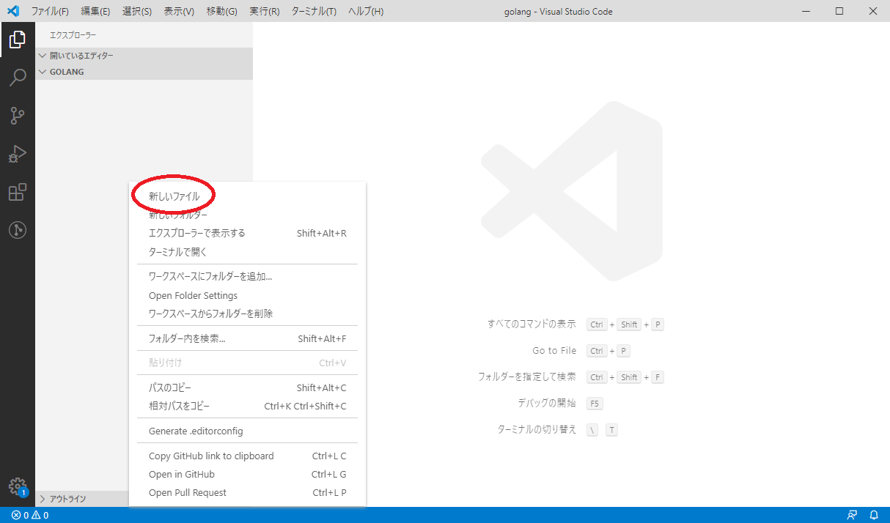
上にある新しいファイルをクリックしましょう。
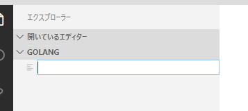
すると何やら入力できそうな欄が出るので、ここにmain.goと入力しましょう。
そうするとこのようになります。
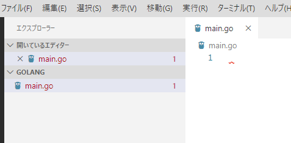
この状態で先ほど 2. テキストエディタを開く でVisual Studio Codeを開いたフォルダを見てみましょう。
3.local/golangに新しくmain.goができていると思います。
もし名前を間違ってしまっても気にしないでください。
今作ったテキストファイルを右クリックして、メニュー中に名前の変更というのがありますので、簡単に変更できます。
4. 写経
いよいよプログラムを書いてを0から書いていきます。
右側の白い部分に文字を書けます。
図の赤い部分にテキストを入力します。
ここではpackage mainと書いて改行しています。
図の青い部分は行番号です。2つ改行しているので3まで表示されていますね。
ここまで書けましたか？ ここまで1文字一句間違えてはいけません。
どんどん書いていきましょう。
package main
import (
"fmt"
)
func main() {
fmt.Println("Hello world!")
}
これを入力しましょう。
これはコピペはやめましょう。
なぜかというと、1文字一句正しく入力することもプログラマーとして必要な能力だからです。
このように教材をひたすら正しく入力することをプログラマー界隈では写経といいます。
ここまで書いている間に右下にバーナーが邪魔してくると思います。
とりあえず今は無視するか、右上の×を押して閉じましょう。
さてここで正しく入力できましたか？
これはプログラムのソースコードと呼ばれます。
それではいよいよローカルで
さてここで正しく入力できたとして、このままではハローワールドできません。
Webブラウザの時はボタンを押せば実行できたのですが、
それはいろいろWebサイトが良しなにやってくれていたので実行できたのです。